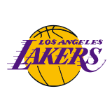
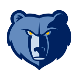
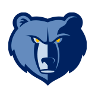
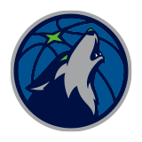
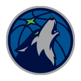
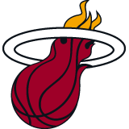
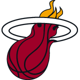
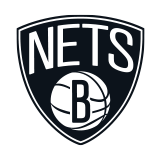
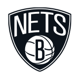

WEST



 



 


EAST


 

 



湖人
回到头部
洛杉矶湖人队（Los Angeles Lakers） [1] ，是一家位于美国加利福尼亚州洛杉矶市的篮球俱乐部。球队1947年成立于明尼阿波利斯，后于1960年搬迁到了洛杉矶。“湖人”指在美国东北五大湖地区工作或者居住的人 [2] ，这个单词来源于明尼苏达州的别称“万湖之州”。由于球衣颜色的关系，湖人又被称为“紫金军团”。
湖人于1948年加入NBA。球队的最大特点是总会有巨星与它联系在一起：
50年代，乔治·迈肯是球队早期主力中锋，他带领湖人6年间5次夺得总冠军，很快成为了NBA中的豪门球队。60年代，在埃尔金·贝勒、杰里·韦斯特、威尔特·张伯伦的带领下，湖人在整个60年代从未缺席过季后赛。1975年，“天勾”卡里姆·阿布杜尔-贾巴尔加盟湖人；1979年，湖人选中“魔术师”埃尔文·约翰逊，他在新秀赛季便带领球队夺冠并当选为FMVP，还同贾巴尔和詹姆斯·沃西一起在80年代先后夺得了5次总冠军。1996年夏天，湖人签下“大鲨鱼”沙奎尔·奥尼尔，并交易得到新秀科比·布莱恩特，两人组成“OK组合”，带领湖人于2000至2002年取得三连冠。2007年，保罗·加索尔加盟湖人，球队又于2008至10年三进总决赛并两度夺冠；2016年4月，湖人传奇球员科比宣布退役。2018年夏季，勒布朗·詹姆斯加盟湖人；2019年夏季，湖人通过交易得到安东尼·戴维斯，随后于次年成功夺冠。
截至2019-20赛季，湖人队史共61次进入季后赛 [1] 、32次获得西部冠军、17次获得NBA总冠军，常规赛最高连胜纪录为33场（均为NBA历史最高）。
快船
回到头部
洛杉矶快船队，成立于1970年并加入NBA，是一支属于美国的加利福尼亚州洛杉矶为基地的NBA职业篮球队，是美国男篮职业联赛（NBA）西部联盟太平洋赛区的一部分。
快船队搬迁过多次，1970年初入NBA称为布法罗勇士队，1977-78赛季，勇敢者队搬到圣地亚哥，很快改名为快艇队。从1976-77赛季开始，快船队连续16个赛季未能进入季后赛。1981年球队易主，斯特林成为球队老板，在1984年将球队搬到洛杉矶。但一直摆脱不了鱼腩球队的身份，最好战绩是分区半决赛。
快船队在2009年选中的状元秀布雷克·格里芬，成为球队未来的基石与希望。2011年休赛期随着克里斯·保罗的加盟，洛杉矶快船队正式迈入NBA联盟强队行列 [1] 。2019年7月6日，科怀-伦纳德已经和洛杉矶快船队达成协议。 [2]
掘金
回到头部
丹佛掘金队是一支属于美国的科罗拉多州丹佛市的职业篮球队，属于美国国家篮球协会（NBA），是美国男篮职业联赛西部联盟西北赛区的一部分。
掘金队于1967-76赛季开始参加ABA联赛，1976年起加入NBA。历史上曾在1975-76赛季打进ABA总决赛，1977-78、1984-85、2008-09、2019-20赛季四次打进NBA西部决赛，从未夺得过NBA总冠军。
火箭
回到头部
休斯敦火箭队，成立于1967年并在1967-68赛季加盟NBA，是一支属于美国的德克萨斯州休斯敦市的职业篮球队，是美国男子篮球职业联赛西部联盟西南区的一部分。
2019年10月，美国NBA休斯敦火箭队总经理莫雷在其社交媒体账号上宣扬香港极端暴力分子的口号，在中国遭到集中批评 [1] 。10月6日，中国篮协发表声明，暂停与火箭交流合作。包括央视体育频道在内的国内多家媒体都宣布暂停火箭队的比赛直播与资讯报道，火箭的多家中国赞助商也宣布暂停与球队的合作 [2] 。截至10月8日，中国九大主流电商平台，均“未在售”休斯顿火箭队相关商品 [3] 。
雷霆
回到头部
俄克拉荷马城雷霆队（Oklahoma City Thunder）是一支位于美国的俄克拉荷马城的职业篮球队，球队前身西雅图超音速队（Seattle SuperSonics）于1966年成立并加入美国男篮职业联赛（NBA），从属于NBA西部联盟的西北赛区。 [1]
1978-79赛季，超音速队打出了球队历史上第一个50+胜场的赛季，并夺得球队历史上第一座NBA总冠军。2008年，超音速队迁至俄克拉荷马城并更名为雷霆队。2011-12赛季，雷霆队凭借凯文·杜兰特、拉塞尔·威斯布鲁克、詹姆斯·哈登三少等人的出色发挥获得西部冠军，但总决赛被迈阿密热火队4-1击败。2012-13赛季，雷霆队取得常规赛西部第一的战绩。 [2-4]
2017年9月，卡梅隆·安东尼加盟俄克拉荷马城雷霆。 [5]
爵士
回到头部
犹他爵士队，于1974年成立并加盟NBA，是一支属于美国的犹他州盐湖城的职业篮球队，是美国男篮职业联赛（NBA）西部联盟西北赛区的一部分。
爵士队于1974年在新奥尔良成立，1979年搬迁至盐湖城。经历了最初几年的挣扎后，从20世纪80年代开始，爵士队成为季后赛的常客，从1983年到2002年，年年常规赛的胜率超过50%，连续19年打入季后赛。1997年和1998年，爵士队两次打入总决赛，但两次都败给芝加哥公牛队 [1] 。 2009-2010赛季，爵士队以西部第五的成绩杀入季后赛。
独行侠
回到头部
达拉斯独行侠队（Dallas Mavericks），原名达拉斯小牛队，是一支位于美国德克萨斯州达拉斯的职业篮球队，1980年成立并加入NBA。现属于NBA西部联盟的西南赛区。
1980年，达拉斯小牛队在全明星赛举行期间加盟NBA。建队初期，达拉斯小牛队被视作一支有前途的球队，但在90年代初，达拉斯小牛队开始下坡路，两度逼近联盟历史最差战绩。1998年，达拉斯小牛队在选秀大会上选中德克·诺维茨基并交易得到史蒂夫·纳什后，正式成为西部劲旅。2005-06赛季达拉斯小牛队首次夺得西部冠军并进入NBA总决赛。2006-07赛季达拉斯小牛队打出队史最佳的67胜15负战绩，成为常规赛冠军。2010-11赛季，达拉斯小牛队在季后赛中连续击败波特兰开拓者队、洛杉矶湖人队、俄克拉荷马城雷霆队，再次杀入总决赛并复仇迈阿密热火队，强势夺下队史首冠。
2018年1月4日，在主场对战金州勇士队的比赛中场期间，Dallas Mavericks的中文译名正式从达拉斯小牛更名为达拉斯独行侠。 [1-2]
开拓者
回到头部
波特兰开拓者队（Portland Trail Blazers）于1970年成立并加盟NBA，是一支属于美国的俄勒冈州波特兰市的球队，也是美国男篮职业联赛（NBA）西部联盟西北赛区的一部分。
开拓者队在1976-77赛季取得49胜33负的成绩，在比尔·沃顿的率领下，第一次杀入季后赛便夺得球队历史上唯一的一座冠军奖杯。此后开拓者队保持西部强队的身份，1989-90赛季，开拓者队再度进入总决赛，决赛不敌“坏孩子军团”活塞队。1991-92赛季，开拓者再次杀入总决赛，又负于公牛队。从1990年至2004年，开拓者队年年进入季后赛，特别在2000年的西部决赛中，开拓者与湖人队大战7场成为经典 [1] 。
灰熊
回到头部
孟菲斯灰熊队，于1995年加入NBA，是一支位于美国田纳西州孟菲斯市的职业篮球队，是美国男子职业篮球球队联赛（NBA）西南赛区的一部分。球队原名温哥华灰熊队（Vancouver Grizzlies），主场设在加拿大的温哥华市。2001年，灰熊队迁回美国孟菲斯市，更名为孟菲斯灰熊队。
1995年球队选中新秀布莱恩特·里弗斯。第二年，灰熊队选中探花新秀、全能前锋阿布杜尔·拉希姆。这位希望之星，果然实力不凡，迅速确立了核心地位，并和里弗斯一起，组成NBA中名头响亮的杀手组合。1998年，球队再把后卫迈克·毕比招入阵中。灰熊队中虽然不乏明星，可惜战绩却始终乏善可陈。进入21世纪后，球队选入西班牙球星保罗·加索尔后，灰熊队逐渐变得具有竞争力，多次打入季后赛，但从未获得一场的季后赛胜利，这个悲惨的记录直到2011年才终止，当时灰熊队以西部第八的名次与西部第一马刺队狭路相逢，在扎克·兰多夫的带领下，灰熊不但取下队史第一场季后赛胜利，而且以4:2的比分淘汰了马刺队，上演了NBA历史上第4次“黑八奇迹”。
太阳
回到头部
菲尼克斯太阳队，是一支属于美国的亚利桑那州菲尼克斯为基地的男子职业篮球队，属于美国国家篮球协会（NBA），于1968年成立并加入NBA联盟，是美国男篮职业联赛西部联盟太平洋赛区的一部分。
太阳队在1968年加盟NBA起，一直位列西部劲旅，但从未加冕总冠军。1969年选秀错过贾巴尔是太阳队最大的遗憾。2000年后太阳队一直坚持小球风格，屡屡打出赏心悦目的比赛，却始终无缘总决赛，其中最好成绩是在1975-76和1992-93两个赛季闯入总决赛。
马刺
回到头部
圣安东尼奥马刺队（San Antonio Spurs）是一支位于美国德克萨斯州圣安东尼奥的职业篮球队。其前身达拉斯灌木丛队于1967年成立并加入美国篮球协会（ABA），1973年搬至圣安东尼奥并改名马刺队，1976年加入NBA。现从属于NBA西部联盟的西南赛区。
马刺队是在1976年ABA与NBA合并后保持完整的原ABA联赛的四支球队之一，也是原ABA联赛中唯一一支夺得NBA总冠军的球队。1976年以来，马刺队共计获得5次NBA总冠军，6次西部冠军，以及21次赛区冠军。只有四次未能进入季后赛，马刺队利用四支乐透签相继选中了埃尔文·罗伯特森（1984年第7顺位）、大卫·罗宾逊（1987年状元）、肖恩·埃利奥特（1989年第3顺位）和蒂姆·邓肯（1997年状元）。
80年代，在“冰人”乔治·格文的率领下，马刺于1982、1983年连续闯入西部决赛。90年代，两位状元秀“海军上将”大卫·罗宾逊和“大基本功”蒂姆·邓肯的“双塔战术”在1999年为球队带来了首个NBA总冠军。进入21世纪，随着托尼·帕克和马努·吉诺比利等人相继加入，马刺成为联盟中最具统治力的球队之一。2003年，马刺4比2战胜总决赛对手网队夺冠。2005年，马刺在总决赛中与同样以防守团队体系著称的活塞队鏖战七场夺冠。2007年，马刺在总决赛横扫骑士队，夺取了九年中第四座总冠军奖杯，正式标志“马刺王朝”的诞生。2014年，马刺在总决赛中以4比1轻取热火队，第五次夺得NBA总冠军。
国王
回到头部
萨克拉门托国王队，于1948年成立并加盟NBA，是一支属于美国的加利福尼亚州萨克拉门托市的职业篮球队，是美国男篮职业联赛（NBA）西部联盟太平洋赛区的一部分。
在1950-1951赛季，以罗切斯特皇家队的身份获得NBA总冠军。之后国王队没能再有突破。直到进入21世纪，国王队在主教练里克·阿德尔曼的普林斯顿战术体系下，以克里斯·韦伯、佩贾·斯托贾科维奇、迈克·毕比、弗拉德·迪瓦茨等球员为核心，搭配以鲍比·杰克逊、希度·特克格鲁为主的“板凳匪徒”，成为NBA中比赛最具观赏性的强队 [1] 。
但在2008年随着迈克·毕比转会老鹰队，标志着国王队的黄金一代终告完结。2009年，开始以泰瑞克·埃文斯为核心重建球队。2013年1月，西雅图财团宣布临时协议将收购国王队，但国王队在最终被威维克·拉纳蒂夫领衔的萨城财团收购。
2017年7月11日，国王官方宣布，正式签下文斯-卡特、乔治-希尔、扎克-兰多夫3名老将。 [2-4]
鹈鹕
回到头部
新奥尔良鹈鹕队，是一支属于美国的路易斯安那州新奥尔良为基地的职业男子篮球队，是美国男篮职业联赛（NBA）西部联盟西南赛区的一部分。
鹈鹕队原为新奥尔良黄蜂队。2002-03赛季，夏洛特黄蜂队搬到新奥尔良，开启球队在新奥尔良的历史。自克里斯·保罗（2005年第一轮第四顺位选中）、大卫·韦斯特等球员的成长，球队成为西部联盟一支劲旅，但在季后赛中始终没有突破，随着其他球队补强、崛起，也逐渐落于下风。 2013年1月，新奥尔良黄蜂队正式召开新闻发布会，宣布球队改名为鹈鹕队。2014-15赛季，球队以西部联盟第八再度杀进季后赛 [1] 。
森林狼
回到头部
明尼苏达森林狼队（Minnesota Timberwolves）于1989年进入NBA，是一支位于美国明尼苏达州明尼阿波利斯市的职业篮球队，是美国男篮职业联赛（NBA）西部联盟西北赛区的一部分。
1989年，在处子赛季中，森林狼队仅取得了22胜60负的糟糕成绩，此后球队连续7年常规赛获胜场次不到30。1995年，森林狼队在首轮第五顺位选中了高中生球员凯文·加内特，1996-97赛季就带领球队取得了历史性的突破，成功杀入季后赛。直到2007年，加内特转会凯尔特人，森林狼投入重建，随后在2008年NBA选秀得到了凯文·乐福，在2009年NBA选秀以第五顺位选中了西班牙“金童”里基·卢比奥。2020年12月7日，森林狼篮球运营总裁格尔森-罗萨斯宣布，名人堂教练鲁迪-汤姆贾诺维奇将加盟球队担任球员顾问。 [1]
勇士
回到头部
金州勇士队（Golden State Warriors）于1946年成立并加盟BAA（1949年加盟NBA），是一支属于美国加利福尼亚州旧金山市的职业篮球队，是美国男篮职业联赛（NBA）西部联盟太平洋赛区的一部分。 [1]
勇士队主场原来在宾夕法尼亚州的费城，1962年才搬到加州；由于加州的昵称是“金州” [2] ，故取名“金州勇士” [1] 。它是最早加盟NBA的11支球队之一；在NBA历史上，曾六次夺得总冠军，NBA的第一次总冠军得主就是勇士队；NBA单场最高分纪录保持者威尔特·张伯伦就是在勇士队拿下100分的。
在唐·尼尔森成为球队教练后，勇士队成为了一支可以为季后赛席位展开争夺的劲旅，2006-07赛季季后赛第一轮更是淘汰常规赛冠军小牛队创造NBA史上第3个“黑八奇迹” [3] 。
2015-16赛季，勇士队在常规赛中取得73胜9负的成绩，打破公牛在1995-96赛季创下的纪录（72胜10负），成为NBA历史单赛季常规赛战绩最好的球队 [4] 。2017年6月13日，勇士队以16胜1负的季后赛战绩，超越2000-01赛季的湖人（15胜1负），成为NBA历史上胜率最高的夺冠球队 [5] 。2017-18赛季，勇士队在NBA总决赛总比分4-0战胜骑士队完成卫冕 [6] 。
雄鹿
回到头部
密尔沃基雄鹿队，是一支属于美国的威斯康星州密尔沃基为基地的NBA职业篮球队，建队于1968年并同年加入NBA联盟，是美国男篮职业联赛（NBA）东部联盟中部赛区的一部分。
1970-71赛季，雄鹿队用三年就登上总冠军的领奖台，成为加盟NBA后夺冠用时最短的球队。自2000年开始雄鹿队实力下降。2007年，易建联正式签约加盟NBA密尔沃基雄鹿队。凭借多年的积累，2009-10赛季重返季后赛，再次成为东部一支强队 [1] 。
猛龙
回到头部
多伦多猛龙队是NBA最年轻的球队之一，于1995年成立并在1995-1996赛季加盟NBA，是一支属于加拿大安大略省的省会多伦多的职业篮球队，是美国男篮职业联赛（NBA）东部联盟大西洋赛区的一部分 [1] 。
猛龙队位于加拿大的多伦多，是NBA唯一队址在美国之外的球队。猛龙队的历史很短，但加盟NBA几年后很快就成为东部有竞争实力的球队之一。1995-1996赛季，猛龙队第一次征战NBA，新秀达蒙·斯塔德迈尔是他们第一个赛季的领军人物。之后在1998年，猛龙队在选秀中从勇士队得到新秀文斯·卡特，成为猛龙队的第二代领军人物，2003年起克里斯·波什成为球队核心。2010年随着波什转会至迈阿密热火队，猛龙队开始进入无领袖时期。2013年在短暂的鲁迪·盖伊时代结束后，2013-2014赛季凯尔·洛瑞和德玛尔·德罗赞组成后场双枪。2015-16赛季，猛龙打进东部决赛，创造队史最佳季后赛战绩。2017-18赛季，猛龙在常规赛取得59胜23负的战绩，排名东部第一，创造了队史常规赛最佳战绩。2018-19赛季，猛龙在东部决赛中以4-2的战绩击败雄鹿队，队史首次晋级NBA总决赛。
北京时间2019年6月14日，猛龙队客场4-2战胜勇士赢下总决赛，猛龙队首次拿到NBA总冠军。
凯尔特人
回到头部
波士顿凯尔特人队是一支位于美国马萨诸塞州波士顿的职业篮球队，1947年成立，1949年成为美国男篮职业联赛（NBA）创始球队之一。现从属于NBA东部联盟的大西洋赛区。
波士顿凯尔特人队历史上17次荣获NBA总冠军（1957、1959-1966、1968-1969、1974、1976、1981、1984、1986、2008），是夺冠次数最多的NBA球队之一。其中，1957-1969年在“红衣主教”奥尔巴赫的运作下，凯尔特人队星光璀璨，培养出“指环王”比尔·拉塞尔、“控卫鼻祖”鲍勃·库西等众多球星，获得了11次总冠军，其间包括空前绝后的八连冠。70年代约翰·哈夫利切克、戴夫·考恩斯、乔·乔·怀特带队两夺总冠军。80年代拉里·伯德、麦克海尔、罗伯特·帕里什带队三夺总冠军。2008年保罗·皮尔斯、凯文·加内特、雷·阿伦带队夺得队史第17个NBA总冠军。 [1-2]
步行者
回到头部
印第安纳步行者队是一支位于美国印第安纳州印第安纳波利斯的职业篮球队，从属于NBA东部联盟的中部赛区。 [1]
步行者队于1967年成立并加入美国篮球协会（ABA），1970、1972、1973年三次获得ABA总冠军。1976年美国篮球协会与美国男篮职业联赛（NBA）合并后，步行者队成为加入NBA的原ABA联赛的四支球队之一。
步行者队在70年代未能进入NBA季后赛，80年代开始对阵容做出了一系列调整而有所好转，90年代在名帅拉里·布朗和拉里·伯德的带领下四次杀入东部决赛，逐步确立了强队地位。
热火
回到头部
迈阿密热火队（Miami Heat），于1988年成立并加入NBA，是一支属于美国佛罗里达州迈阿密市的职业篮球队，是美国男篮职业联赛（NBA）东部联盟东南赛区的一部分。迈阿密热火队热火主场设在迈阿密市中心的美航中心球馆。热火队与夏洛特黄蜂队同时成立于1988年NBA，是代表佛罗里达州的两支NBA球队之一（另一支为奥兰多魔术队）。
球队位于四季温暖宜人的佛罗里达州迈阿密市，所以在众多候选队名名单中选择了“热”，既显示出了迈阿密的气候条件，又希望球队未来红红火火、蒸蒸日上。在最初的7个赛季，尽管热火拥有格伦·莱斯这样的超级得分手，但常规赛战绩从未超过50胜，期间只有两个赛季进入季后赛。2003年选秀大会他们在首轮第五顺位选择了来自马奎特大学的德怀恩·韦德。2004年热火与洛杉矶湖人交易得到沙奎尔·奥尼尔。2005-06赛季韦德率领热火首度杀入总决赛，在0-2落后的险境下翻盘达拉斯独行侠队首捧总冠军。随着奥尼尔渐渐老去，热火的战斗力出现明显下滑。2010年夏季交易中，先后得到波什和詹姆斯的加盟，跟随韦德组成03届白金一代热火三巨头，带领球队连续四年杀入NBA总决赛，2012年迈阿密热火队以4-1战胜俄克拉荷马雷霆队夺得NBA总冠军。2013年以大比分4-3险胜圣安东尼奥马刺队完成卫冕。
截至2019-20赛季，迈阿密热火21次闯入季后赛，夺得了14次赛区冠军，6次获得东部冠军 、3次获得总冠军。
76人
回到头部
费城76人队（Philadelphia 76ers），是一支属于美国的宾夕法尼亚州费城为基地的NBA职业篮球队，是NBA东部联盟大西洋赛区的一部分。
费城76人队作为NBA中的一支老牌球队，在建队之初既没有把主场设在费城，也没有取名为76人队，而是起了个锡拉丘兹民族队。1937年组建的锡拉丘兹民族队随着NBL（国家篮球联盟）与ABB（美洲篮球协会）的合并，于1949年加入NBA。
76人队在参加NBA的65年中，曾分别在1954-55、1966-67、1982-83三个赛季夺得全联盟总冠军，还有9个半区冠军。
篮网
回到头部
布鲁克林篮网队（Brooklyn Nets），是一支属于美国的纽约州纽约市布鲁克林区为基地的男子职业篮球队，属于NBA，于1967年组队并在1976年加入NBA联盟，是美国男篮职业联赛东部联盟大西洋赛区的一部分。 [1]
布鲁克林篮网队原为新泽西篮网队，球队在1976年加入NBA联盟后，未夺得总冠军，但分别在2001-02和2002-03赛季获得东部联盟的头名。在2004年球队被转让给布鲁斯·拉特纳，在2012-13赛季后宣布球队正式迁往纽约市的布鲁克林区。而2010年5月份，俄罗斯商人米哈伊尔·普罗霍罗夫以2亿美金正式收购篮网 [2] 。
2018年4月13日，布鲁克林篮网老板米哈伊尔·普洛霍夫已向蔡崇信出售了篮网队49%的股份，该交易已获得NBA董事会一致通过。 [3]
2019年8月，蔡崇信将完成篮网全部股份收购 23.5亿美元创历史纪录。 [4]
魔术
回到头部
奥兰多魔术队（Orlando Magic）成立于1989年并加盟NBA，是一支属于美国的佛罗里达州奥兰多为基地的NBA职业篮球队，是美国男篮职业联赛（NBA）东部联盟东南部赛区的一部分。
魔术队在1989-1990赛季加入NBA，仅用了很短的时间就成为冠军的有力争夺者。当魔术队在1992年引进中锋沙奎尔·奥尼尔后，球队的竞争实力陡然增强，成为联盟中最受欢迎的队伍之一。
奇才
回到头部
华盛顿奇才队，成立于1961年并加盟NBA，是一支以美国的哥伦比亚特区华盛顿为基地的NBA职业篮球队，是美国男篮职业联赛（NBA）东部联盟东南部赛区的一部分。
奇才队又称华盛顿巫师队，是NBA中名字变化最多的球队，前身是巴尔的摩子弹队。从60年代开始，球队就是东部的强队之一，连续打入季后赛，并于1977-78赛季夺得球队历史上第一座总冠军 [1] 。不过90年代奇才队大部分时间在扮演失败者的角色，整个90年代只于1996-1997赛季进过季后赛。随着吉尔伯特·阿里纳斯在2004-05赛季的强势崛起，奇才队重新杀入季后赛。但从2008年至2011年，奇才队连续三年与季后赛无缘，直到2013-14赛季，在约翰·沃尔等球员的带领下，重返季后赛。
黄蜂
回到头部
夏洛特黄蜂队（Charlotte Hornets）是一支位于美国北卡罗来纳州夏洛特的职业篮球队，其前身夏洛特山猫队于2004年建队并加入美国男篮职业联赛（NBA），是NBA联盟最年轻的球队。现从属于NBA东部联盟的东南赛区。
经历了五个赛季的磨练后，2009-10赛季山猫队在球队领袖杰拉德·华莱士和史蒂芬·杰克逊的率领下以东部第七的成绩首次杀入季后赛。2010年，山猫队进入“乔丹时代”，NBA联盟董事会批准了迈克尔·乔丹以2.75亿美元入主山猫队的交易。2014年5月21日，山猫队正式宣布球队更名为夏洛特黄蜂队。同时自1988年到2002年的那段黄蜂队的历史也正式划归到了现夏洛特黄蜂队名下。 [1-2]
公牛
回到头部
芝加哥公牛队是一支位于美国伊利诺伊州芝加哥的职业篮球队，1966年成立并加入美国男篮职业联赛（NBA）。现从属于NBA东部联盟的中部赛区。
在度过最初的适应期后，公牛队渐有起色。1971年起，公牛队连续四年常规赛取胜50场以上。1974和1975年，公牛队凭借顽强的防守两次杀入分区决赛。1984年，公牛队在选秀大会上以探花签选中迈克尔·乔丹，他带领公牛队在1991-1993年和1996-1998年获得两次三连冠，成为除波士顿凯尔特人、洛杉矶湖人外夺冠次数最多的NBA球队。此外，公牛队在1995-96赛季的82场常规赛中取得72胜。
进入21世纪，2008年，公牛队在选秀大会上以状元签选中德里克·罗斯，在其带领下重回争冠行列，2011年再次杀入东部决赛。2011年和2012年，公牛队连续两年获得NBA常规赛冠军。
尼克斯
回到头部
纽约尼克斯队，成立于1946年并加入美洲篮球协会（BAA，NBA的前身），是一支属于美国的纽约州纽约市为基地的NBA职业篮球队，是美国男篮职业联赛（NBA）东部联盟大西洋赛区的一部分。
纽约尼克斯队是从最初的BAA联盟开始就没有搬迁过城市的两支球队之一（另外一支是波士顿凯尔特人队） [1] 。
尼克斯在联盟的三个不同时代有着辉煌的表现，每个时代都相差二十年左右。在20世纪50年代初，尼克斯三次进入NBA总决赛。20世纪70年代初是球队的黄金一代，球队赢得了2个NBA总冠军。当时在队中的有威利斯·里德、沃尔特·弗雷泽、戴夫·德布斯切尔、厄尔·门罗和比尔·布拉德利等优秀的球员。接着是在20世纪90年代，尼克斯再次统治了联盟，因为中锋帕特里克·尤因出现，球队在1993-94和1998-99赛季均打进总决赛。
活塞
回到头部
底特律活塞队，成立于1941年并在1948年加盟NBA，是一支属于美国的密歇根州底特律市的职业篮球队，是美国男篮职业联赛（NBA）东部联盟中部赛区的一部分。
活塞队连续1954-55和1955-56两个赛季杀入NBA总决赛，但先后不敌锡拉丘兹民族队和费城勇士队，与冠军擦肩而过。1957年，活塞搬迁至底特律，球队更名为底特律活塞。1981年活塞在首轮第二顺位选择了印第安纳大学的伊塞亚·托马斯，在托马斯的率领下，在1989年的NBA总决赛中4-0横扫湖人队夺冠。1990年活塞在总决赛中4-1轻取波特兰开拓者队，卫冕成功。2003-04赛季，在主帅拉里·布朗的指挥下，活塞以理查德·汉密尔顿与昌西·比卢普斯为核心再次杀入总决赛，并以4-1的总比分击败拥有四巨头的湖人队，重回冠军团队之列 [1] 。
老鹰
回到头部
亚特兰大老鹰队是一支所属于美国乔治亚州亚特兰大的职业篮球队，成立于1946年，于1949年加入美国男篮职业联赛（NBA），是NBA东部联盟东南赛区的一部分。
1957-58赛季，老鹰队在鲍勃·佩蒂特率领下，击败波士顿凯尔特人队获得队史首座NBA总冠军。80-90年代，在当家球星多米尼克·威尔金斯和名帅兰尼·威尔肯斯率领下，成为东部劲旅。2007-08赛季，在经历了长达8年的重建旅程之后重返季后赛。2014-15赛季，在年度最佳教练迈克·布登霍尔泽的率领下取得队史最佳的60胜22负战绩并打入东部决赛。2015年1月，老鹰队单月17战全胜，成为NBA历史上单月胜场次数最多的球队。
骑士
回到头部
克利夫兰骑士队（Cleveland Cavaliers），是一支属于美国的俄亥俄州克利夫兰（Ohio,Cleveland）的职业篮球队，是美国男篮职业联赛（NBA）东部联盟中部赛区的一部分。
1970年，克利夫兰骑士队正式成立并加入NBA联盟。2003年，骑士队选中状元秀勒布朗·詹姆斯，在詹姆斯的带领下，骑士队于2007年首次进入NBA总决赛，但以0-4负于马刺队。2011年选秀大会上，骑士队用状元签选中凯里·欧文，同时队伍进入重建。2014年7月12日，詹姆斯宣布回归骑士队。同年夏天，骑士队通过签约与交易，组建了勒布朗·詹姆斯、凯里·欧文与凯文·乐福的骑士队三巨头。 [1]
2016年6月20日，骑士战胜勇士夺得2015-16赛季总冠军。 [2] 2017年6月13日，骑士获得2016-17赛季NBA亚军。 [3-4] 2017年7月24日，骑士正式任命科比·奥尔特曼担任球队总经理。 [5]